Individual translate and rotate properties compose around transform-box:content-box with transform-origin:0 0; catches shorthand-only and border-box-origin transform implementations.
PASSvisually equivalent · no rejecting defect · thresholded evidence 0.000232% · raw 0.000232% (1 px)transforms-rotated-repeating-background · rotated-repeating-backgroundPASS via CSS-scale observation: sub-CSS shared-colour coverageAntialiasCoverageΔE 1.8
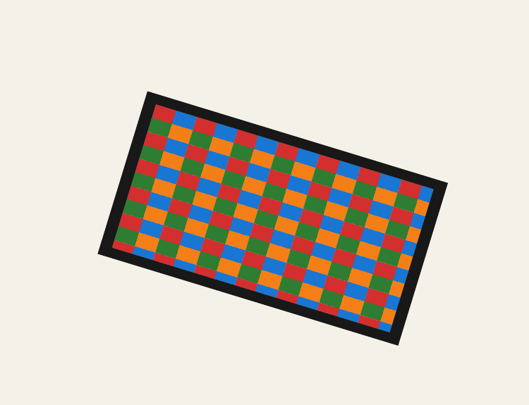
Chrome refironpressfull-page >1.0%/channel diff
why: visually accepted coverage phase; raw antialiasing coverage residue on a shared outline
A rotated and non-uniformly scaled box keeps its repeating image cell in the element's transformed coordinate space; catches page-space pattern resources that ignore the element CTM.
regions (1 total; showing 1 representative)
Complete component census grouped by dominant raster class; representative details are bounded.
Chained transform functions translate(...) rotate(...) compose left-to-right in the box coordinate space. Aspirational: parse_transform returns a single Transform, so chaining is unsupported.
A non-zero unitless rotate() angle is syntactically invalid, so the declaration is discarded and the green target stays over the red reference. Catches permissive parsers that reinterpret rotate(45) as rotate(45deg).
A non-zero unitless translate() component is syntactically invalid, so the declaration is discarded and the green target stays over the red reference. Catches treating bare translation numbers as points or pixels.
PASSexact matchtransforms-matrix · matrix
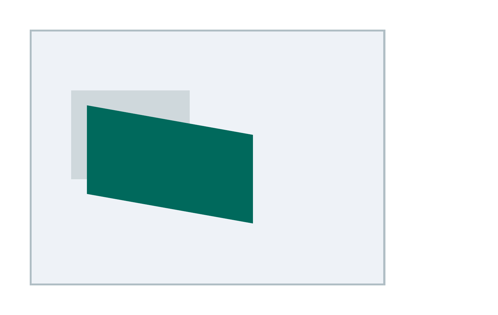
Chrome refironpressfull-page >1.0%/channel diff
transform: matrix(a,b,c,d,e,f) applies a 2D affine matrix combining scale, shear, and translate in one function. Aspirational: matrix() is not parsed by ironpress.
PASSexact matchtransforms-none-reset · none-reset
Chrome ref
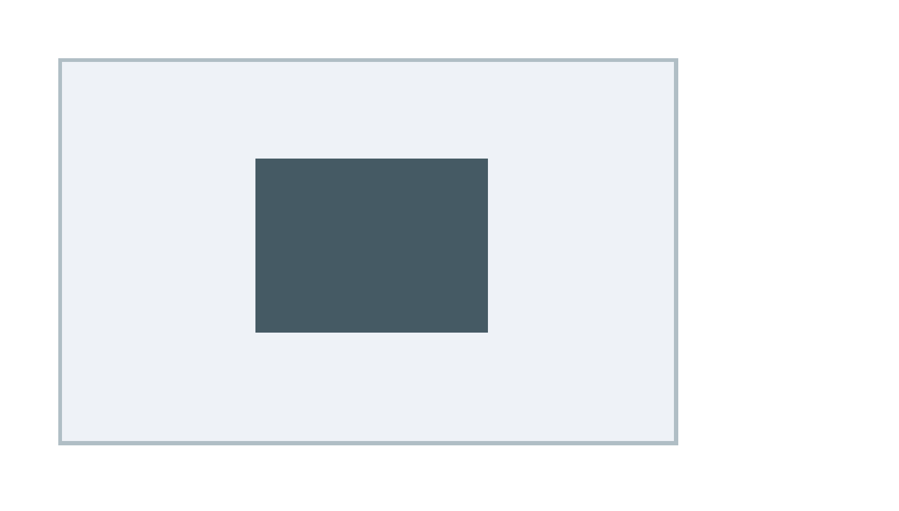
ironpressfull-page >1.0%/channel diff
transform: none is an explicit reset: a later rule overriding an earlier transform with none leaves the box untransformed in its in-flow slot.
PASSexact matchtransforms-rotate · rotate
Chrome ref
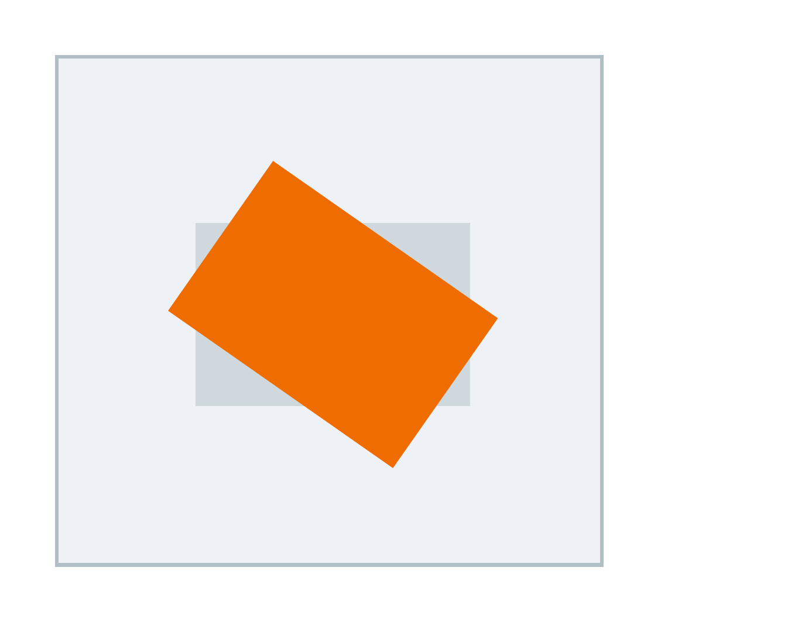
ironpressfull-page >1.0%/channel diff
transform: rotate() turns the box clockwise about its center (default transform-origin) without disturbing layout flow.
transform:scale(150%,50%) accepts percentage scale factors and scales from a top-left origin; catches parsers that accept only numeric scale factors and drop the transform.
PASSexact matchtransforms-scale-x · scaleX
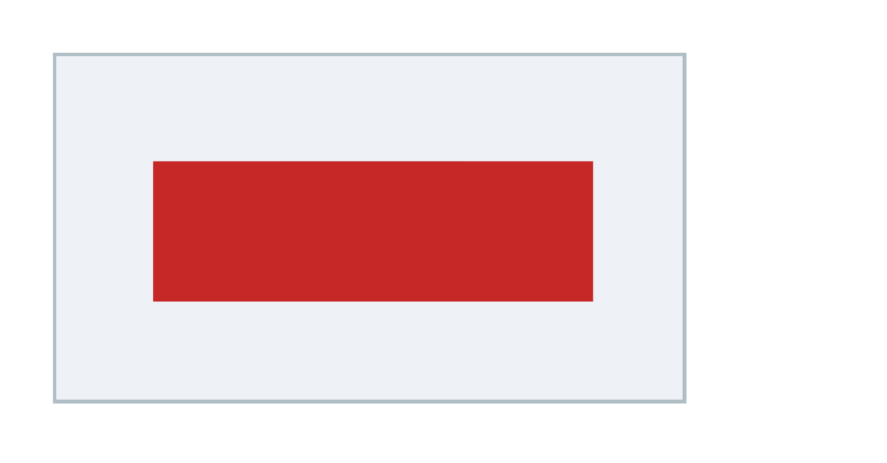
Chrome refironpress
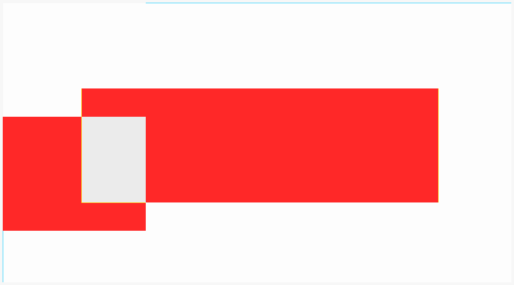
full-page >1.0%/channel diff
transform: scaleX() stretches the box horizontally about its center.
PASSexact matchtransforms-scale-y · scaleY
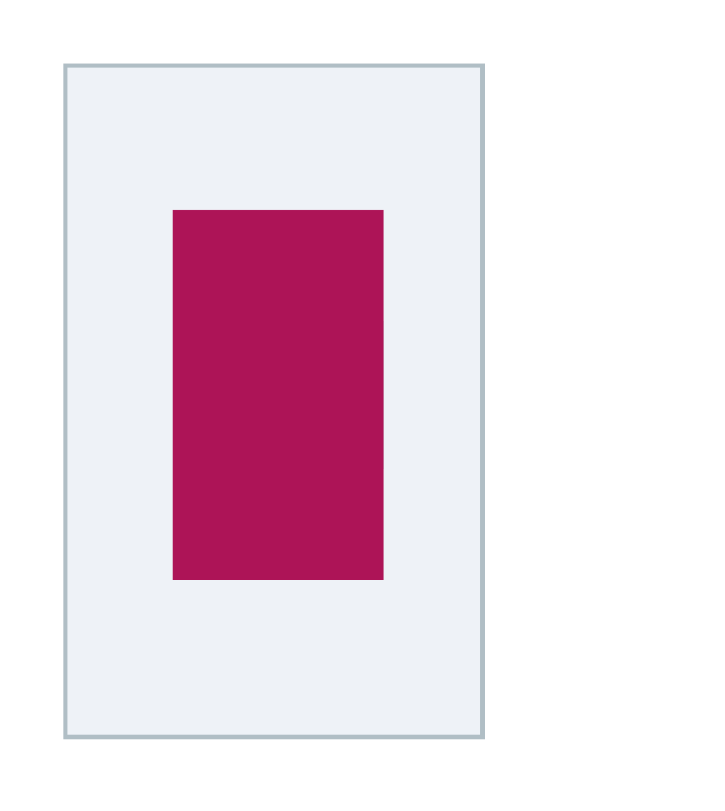
Chrome refironpress
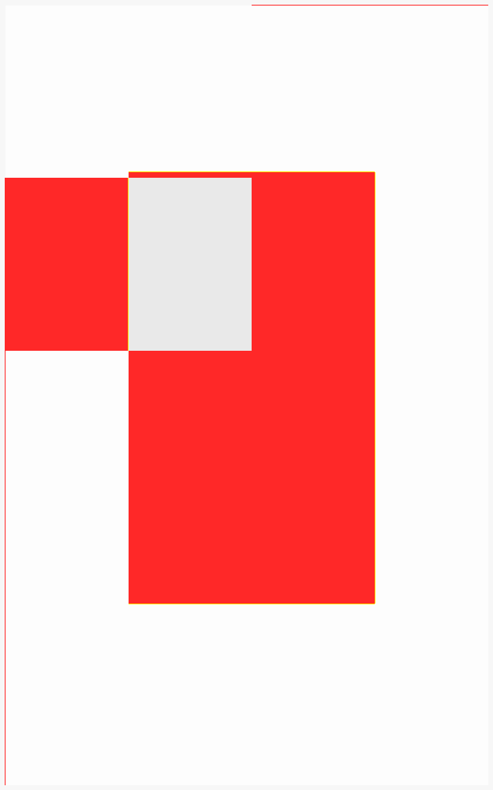
full-page >1.0%/channel diff
transform: scaleY() stretches the box vertically about its center.
PASSexact matchtransforms-skew · skew
Chrome ref
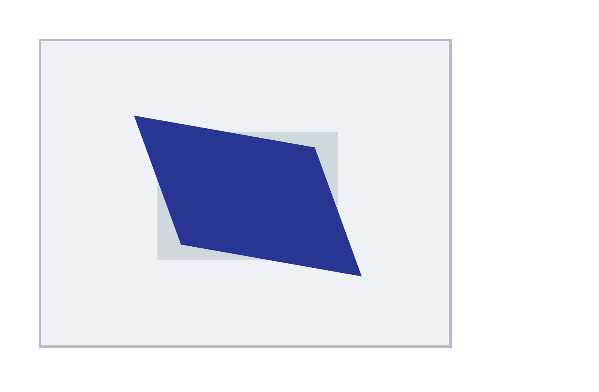
ironpressfull-page >1.0%/channel diff
transform: skew() shears the box along X and Y about its center, turning the rectangle into a parallelogram. Aspirational: skew is absent from the ironpress Transform enum and parser.
PASSexact matchtransforms-skew-x · skewX
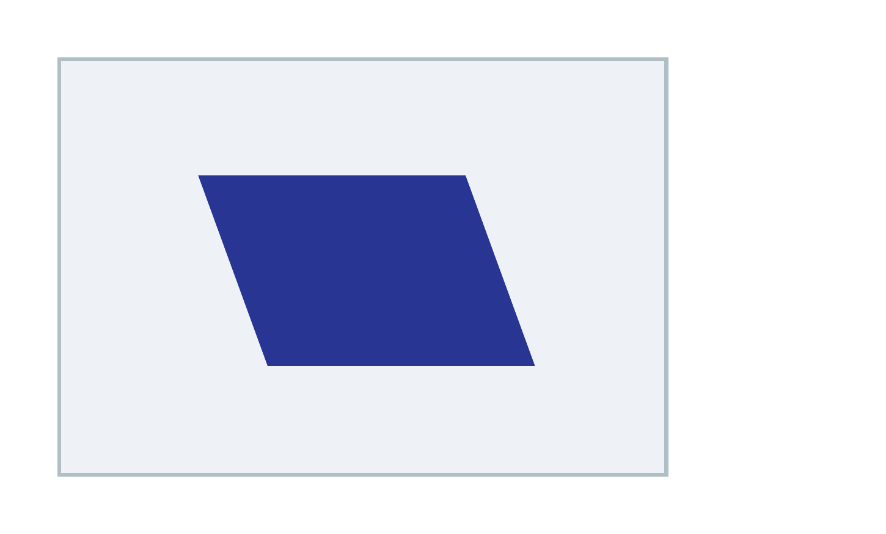
Chrome refironpressfull-page >1.0%/channel diff
transform: skewX(20deg) shears the box horizontally about its center into a parallelogram.
PASSexact matchtransforms-skew-y · skewY
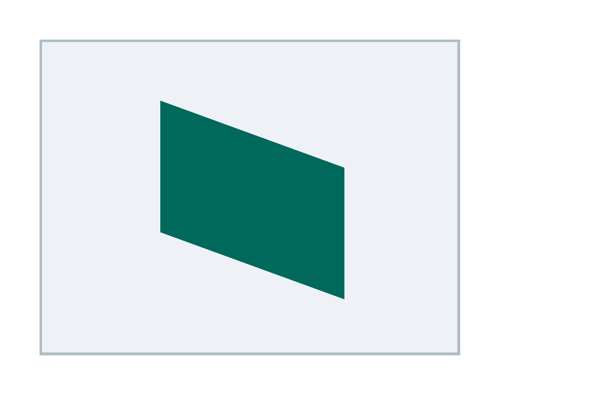
Chrome refironpressfull-page >1.0%/channel diff
transform: skewY(20deg) shears the box vertically about its center into a parallelogram.
PASSexact matchtransforms-translate · translate
Chrome ref
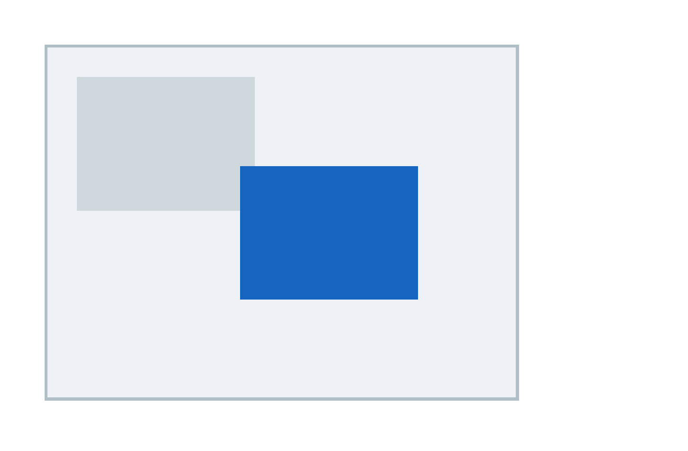
ironpress
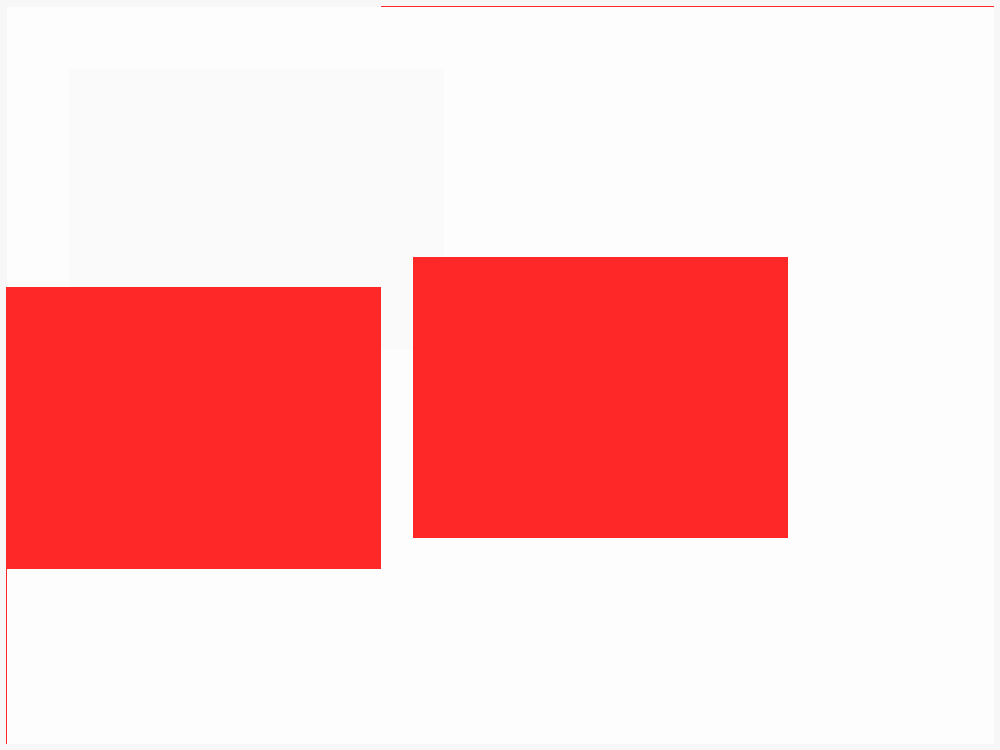
full-page >1.0%/channel diff
transform: translate(x, y) shifts a positioned box right and down from its in-flow slot without affecting surrounding layout.
transform: translate(50%, 50%) resolves percentages against the element's OWN border box (width for X, height for Y), shifting the box by half its own size.
A parent perspective makes a translateZ child render larger than the red reference; catches ignoring either the perspective property or the Z translation.
rotate3d(1,1,0,62deg) rotates around an arbitrary 3D axis under perspective; catches dropping rotate3d or rendering the element as an unprojected rectangle.
transform-origin: top left moves the rotation pivot from the box center to its top-left corner, changing where a rotate() lands. Aspirational: ironpress has no transform-origin parse and always pivots about the default origin.